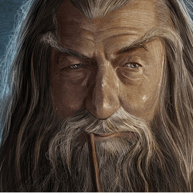

Красная смородина
Друже, представляю тебе очень лютый софт для рубки тяжелого метала.
Его можно испольовать как в качестве реампинга для сырых гитарных треков, так и для того чтобы просто поиграть.
Все это поставляется в формате VST3/STANDALONE (windows)
А еще это бесплатно!
ВНИМАНИЕ!!!
В программе использованы бесплатные импульсы кабинетов взятые в интернете
Подробное описание каждого кабинета и ссылки на первоистоки сих файлов можно отыскать в разделе ссылки
Его можно испольовать как в качестве реампинга для сырых гитарных треков, так и для того чтобы просто поиграть.
Все это поставляется в формате VST3/STANDALONE (windows)
А еще это бесплатно!
ВНИМАНИЕ!!!
В программе использованы бесплатные импульсы кабинетов взятые в интернете
Подробное описание каждого кабинета и ссылки на первоистоки сих файлов можно отыскать в разделе ссылки
Что есть в программе?
- очень лютый усилитель
- эмулятор кабинета, с возможностью загрузки своих импульсов
- грелка
- эффект реверберации
- эффект дилея
- нойзгейт
- красивый дизайн с богатырями
Ну что, друже, ты заинтересовался? Коли так, то нажимай на кнопку, дабы попасть на страницу загрузок
СКАЧАТЬ
- эмулятор кабинета, с возможностью загрузки своих импульсов
- грелка
- эффект реверберации
- эффект дилея
- нойзгейт
- красивый дизайн с богатырями
Ну что, друже, ты заинтересовался? Коли так, то нажимай на кнопку, дабы попасть на страницу загрузок
Загрузки
Запампаваць
Download
Windows x64 ••••••••••
Беларуская
••
Русский
••
English
Windows x32 ••••••••••
Беларуская
••
Русский
••
English
VST3 x64 ••••••••••
Беларуская
••
Русский
••
English
VST3 x32 ••••••••••
Беларуская
••
Русский
••
English
Контакты
Коли вам надобно что-то написать мне.
VK

Супердед
vk.com/chin_cxz
vk.com/chin_cxz
Почта
cornfloweraudio@yandex.ru
Telegram
Telegram
Ссылки
В программе использованы импульсы из интерента. Здесь вы можете отыскать их истоки.
http://www.grgr.de/IR/
Cabinet1 - Hiwatt oiro\Hiwatt mtg-N2 oiro.wav
Cabinet1 - Vintage Marshall setup\marshall-2_impact.wav
Cabinet1 - Rectifier setup\rectifier AT4033_impact.wav
https://www.forward-audio.com/...
Cabinet1 - faIR_CornOnTheLeash.wav
Cabinet1 - faIR_ToolPot.wav
https://www.forward-audio.com/...
Cabinet1 - faIR_CornOnTheLeash.wav
Cabinet1 - faIR_ToolPot.wav